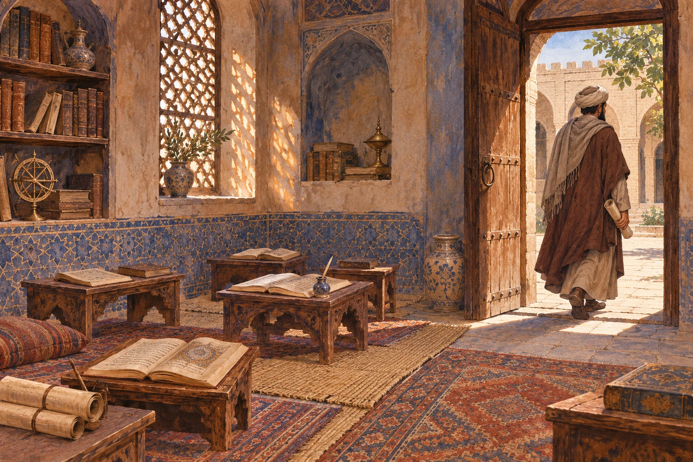

Reading 1
What Do We Owe Each Other?
Islam’s beginnings, community, trade, and the obligations of creditors
Ethics and Leadership · November 16–27, 2026
Three illustrated histories of ethics in Islam—from a community beginning again to a country facing its creditors.
Reading 1
Islam’s beginnings, community, trade, and the obligations of creditors

Reading 2
Al-Ghazali, the purpose of wealth, and ideas that crossed into Europe

Reading 3
Colonialism, reform, modern fundamentalism, and the morality of finance